1. La tecnología, motores PMM en superficie
Los motores de imanes permanentes (PMM), han venido siendo implementados en gran variedad de aplicaciones e industrias desde hace muchos años gracias a su demostrada eficiencia que permite tener importantes ahorros de energía. Una de las industrias que tiene un elevado consumo de energía es la petrolera, la cual consume gran cantidad de energía en los diferentes sistemas de levantamiento artificial de petróleo, que son básicamente los diferentes modos para extraer el producto del subsuelo.
Desde hace años se vienen implementando tecnologías que permiten la optimización del consumo de energía con un ahorro económico, la mitigación de emisiones de CO2 que generan los sistemas de motores de inducción los cuales tienen bajas eficiencias y por consiguiente altos consumos de energía generando en sí un bajo apoyo a la gestión ambiental.
Las aplicaciones más comunes de los PMM en la industria son en fondo de pozo con motores de imanes permanentes de media tensión para sistemas de levantamiento artificial con bombeo electrosumergible (ESP – Electro Submersible Pump) o bombeo por cavidades progresivas. Desde hace más de 10 años, se han venido implementando los PMM de baja tensión, como su aplicación en superficie en sistemas de levantamiento artificial con bombeo por cavidades progresivas.
(Hirschfeldt., 2008, pp. 1–3)
1.1 Motores de imanes permanentes en aplicaciones de superficie - concepto de motor cabezal
El cabezal de rotación es un equipo de accionamiento mecánico, el cual con sus rodamientos es el encargado de soportar la carga axial del sistema. Cuenta con un freno mecánico o hidráulico para controlar el Backspin generado en los sistemas PCP. El motor eléctrico de inducción, junto con el sistema de transmisión de potencia son los encargados de generar el torque que es transmitido a la barra lisa a través del cabezal de rotación, accionando de esta manera la bomba de cavidades progresivas en fondo.
Los motores de imanes permanentes PMM en superficie bombeo PCP integran en un solo equipo el cabezal de rotación, el sistema de transmisión de potencia y el motor de inducción. Esto se logra al tener un motor con imanes permanentes (PMM) de eje hueco, con acople directo a la barra lisa con relación 1 a 1 (no hay sistema de transmisión por lo que es eje hueco) integrado con un cabezal de rotación que soporta la carga axial.
De esta manera, se integra un solo equipo que en la parte superior tiene un motor PMM y en la parte inferior un cabezal de rotación. El motor cabezal cuenta con un sistema electrónico de frenado para la contención completa de un Backspin a diferencia de los sistemas convencionales.
- Cabezal de producción / cabeza colgadora de tubería de producción.
- Válvula Preventora – BOP.
- Tee de producción.
- Prensa estopas – Stuffing Box.
- Cabezal de rotación.
- Grampa de barra pulida.
- Sistema de transmisión de potencia (correas y poleas).
- Motor eléctrico de inducción.
1.2 Comparación de los cabezales PMM versus los sistemas convencionales
Los sistemas convencionales son muy diferentes de los cabezales PMM, desde su construcción, características, capacidades, funcionamiento de operación y estructura. A continuación vamos a comparar los principales aspectos de un sistema convencional vs. un sistema PMM:
Construcción: partes y accesorios
Sistema convencional:
- Cabezal de producción / cabeza colgadora de tubería de producción.
- Válvula preventora – BOP.
- Tee de producción.
- Prensa estopas – Stuffing Box.
- Cabezal de rotación.
- Grampa de barra pulida.
- Sistema de transmisión de potencia (correas y poleas).
- Motor eléctrico de inducción.
Cabezal PMM:
- Cabezal de producción / cabeza colgadora de tubería de producción (Convencional).
- Válvula preventora – BOP (Convencional).
- Tee de producción (Convencional).
- Prensa estopas – Stuffing Box (Convencional).
- Cabezal PMM.
- Grampa de barra pulida convencional.
Manipulación de cargas:
Sistema convencional:
- Carga desbalanceada.
- Dificultad de manipulación, cargue y descargue.
- Necesidad de soportes especiales para el transporte y almacenamiento del sistema. El soporte equivocado puede traer riesgos para los equipos y las personas involucradas en la manipulación y almacenamiento de los equipos.
Cabezal PMM:
- Carga concéntrica y balanceada.
- Facilidad de manipulación, cargue y descargue.
- No requiere soportes especiales para su almacenamiento y transporte.
Conexión eléctrica:
Sistema convencional:
- Conexión de cables tipo “colombina” (se conectan las fases directamente sin bornera).
- Mayor riesgo de presentar puntos calientes.
- Variador de frecuencia estándar.
Sistema convencional:
- Conexión en bornera con caja de bornes certificada (en el caso del fabricante General Magnetic GM).
- Menor riesgo de presentar puntos calientes.
- Variador de frecuencia premium que tenga capacidad de manejar motores de imanes permanentes PMM y tenga probada la compatibilidad con el sistema electrónico de frenado.
Control de Backspin:
Sistema convencional:
- Freno mecánico.
- Freno hidráulico.
Cabezal PMM:
- Control electrónico de frenado a prueba de fallas.
Ciclo de vida:
Sistema convencional:
- 2 – 3 años para rebobinado de motor y mantenimiento mayor de cabezal de rotación.
Cabezal PMM:
- 10 años para cambio de rodamientos de carga axial.
Eficiencia:
Sistema convencional:
- Los motores de inducción, inclusive los de alta eficiencia, que pueden llegar a eficiencias de 92 % - 95 %, son motores que cuando no trabajan a su máxima capacidad pierden eficiencia. En los sistemas PCP los motores trabajan a una velocidad de entre 80-300 RPM y normalmente la máxima velocidad de un motor es de 500 RPM, por lo que están trabajando generalmente por debajo del 60 % e inclusive en la mayoría de las veces por debajo del 50 % de su máxima capacidad. Esto hace que el motor pierda más eficiencia y no opere en sus máximas capacidades.
- Si bien los sistemas de transmisión de potencia tienden a tener eficiencias muy elevadas, inclusive cercanas al 98 %, esto es cuando el sistema es nuevo. En nuestros ambientes climáticos con alta humedad y calor, las correas tienden a agrandarse, haciendo que el sistema pierda eficiencia rápidamente.
- Teniendo en cuenta los factores anteriormente mencionados, generalmente se dice que un sistema convencional tiene una eficiencia de entre 70 % - 80 %.
Cabezal PMM:
- Al ser un motor PMM su eficiencia es mucho mayor que la de un motor de inducción. Es un motor diseñado para trabajar a bajas velocidades y altos torques, por lo que puede trabajar desde 30 RPM (min. Vel.) hasta 450 RPM (Max. Vel.) con una eficiencia probada de más del 97 %.
- Al ser un motor cabezal integrado de eje hueco, no se tiene sistema de transmisión de potencia, por lo que la eficiencia no se ve afectada por el desgaste de correas y poleas.
- La eficiencia sistemática es superior.
1.3 Ventajas y desventajas de los motores PMM en superficie
Ventajas de los sistemas convencionales:
- Menor riesgo eléctrico.
- Posibilidad de usar variadores estándar.
Ventajas de los cabezales PMM:
- Mayor eficiencia.
- Ahorro en consumo de energía.
- Facilidad de manipulación de carga.
- Facilidad de almacenamiento.
- Menos mantenimientos preventivos y reactivos.
- Mayor ciclo de vida del producto.
- Facilidad de operación desde el variador de frecuencia en todo el rango operativo (no requiere cambios de relación ni manipulación física para cambiar parámetros operativos). El sistema es 100 % controlado por el variador de velocidad, por lo que es posible cambiar los parámetros de operación desde el centro de mando.
- Mayor control y monitoreo remoto.
- Menor riesgo mecánico.
- Incremento de producción.
- Flexibilidad de operación.
- Silencioso – 68 Db a 3 metros de distancia.
- Contención completa de Backspin con control electrónico de frenado de resistencias.
Desventajas de los sistemas convencionales:
- Menor eficiencia.
- Mayor consumo de energía.
- Carga desbalanceada.
- Necesidad de soportes especiales para su almacenamiento.
- Mayor cantidad de mantenimientos preventivos y reactivos (cambio de aceite, correas, poleas, rodamientos, rebobinados, etc.)
- Necesidad de un equipo adicional para recambio al momento de realizar mantenimientos mayores como son un rebobinado o un cambio de rodamientos o freno mecánico o hidráulico.
- Ciclo de vida reducido.
- Necesidad de hacer ajustes físicos al equipo para algunos cambios de parámetros de operación.
- Mayor riesgo mecánico.
- Mayor producción diferida.
- Freno mecánico o hidráulico (mayor riesgo).
Desventajas de los cabezales PMM:
- Mayor riesgo eléctrico.
- Necesidad de variadores de velocidad premium que además tengan probada la compatibilidad con el controlador electrónico de frenado para la contención completa de Backspin.
- Mayor costo de capital.
2. Conceptos básicos de los motores de imanes permanentes en superficie
A continuación se mostrarán las partes mecánicas y eléctricas de un cabezal PMM y se presentarán algunas prácticas recomendadas del uso de la tecnología.
2.1 Funcionamiento de los motores de imanes permanentes PMM de superficie
Los cabezales PMM integran en una sola solución los sistemas convencionales de la siguiente manera:
- En la parte inferior se encuentra la Stuffing Box con el Booth Conventional.
- Posteriormente está el cabezal PMM de eje hueco, el cual en la parte inferior tiene los rodamientos de carga axial (cabezal de rotación) y en la parte superior tiene el motor PMM, los dos con eje hueco permiten el paso de la barra lisa a través del centro del cabezal PMM sin necesidad de sistema de transmisión de potencia.
- En la parte superior se acopla la grapa de potencia directamente a la extensión del eje del cabezal de rotación, para de esta manera transmitir el torque del motor directamente a la sarta de varillas.
- Para controlar el Backspin se utiliza un control electrónico de resistencias de frenado, el cual permitirá un Backspin controlado y completo a prueba de fallas.
2.2 Partes eléctricas y mecánicas de los motores de imanes permanentes de superficie
El cabezal PMM está dividido en tres tipos de partes:
Partes mecánicas:
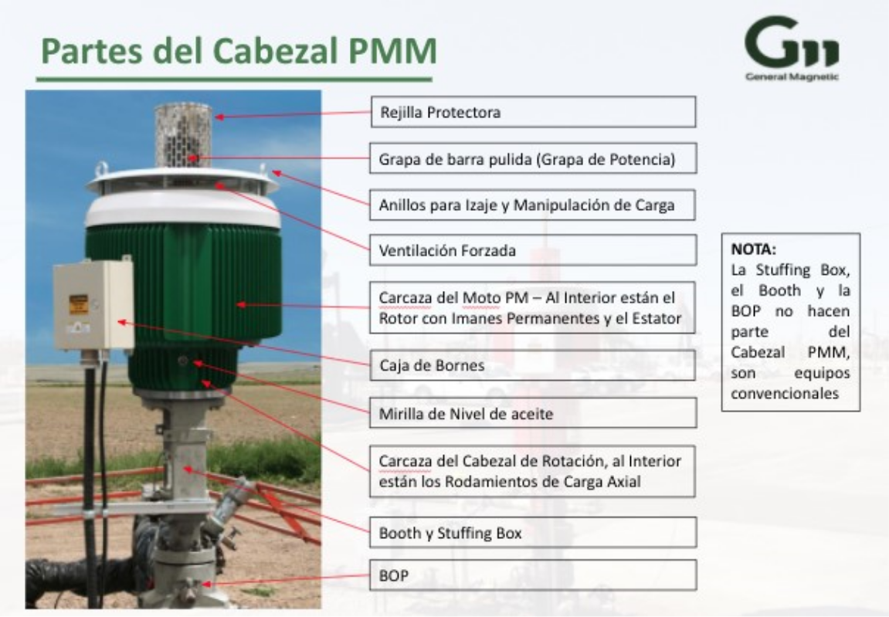- Rejilla protectora: evita que haya contacto y/o algún accidente con la grapa de potencia que es la única parte giratoria externa del cabezal PMM.
- Grapa de barra pulida o potencia: es la encargada de acoplarse en la extensión del eje del cabezal de rotación y la que permite que la sarta de varillas gire con la potencia de PMM.
- Anillos para izaje y manipulación de carga: están diseñados para izar y manipular la carga de manera segura gracias a su peso concéntrico.
- Ventilación forzada: permite que el sistema permanezca ventilado siempre que el rotor esté girando.
- Eje hueco: permite el paso de la barra lisa a través del centro del rotor y cabezal de rotación.
- Cabezal de rotación con rodamientos de carga axial: es el encargado de soportar la carga axial del sistema.
- Caja de bornes.
Partes electromecánicas:
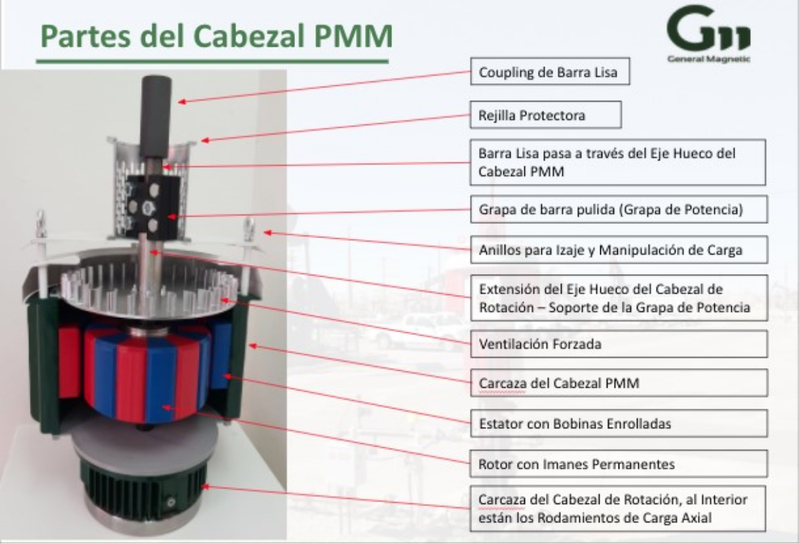- Rotor.
- Magnetos (imanes) permanentes.
- Estator.
Partes eléctricas:
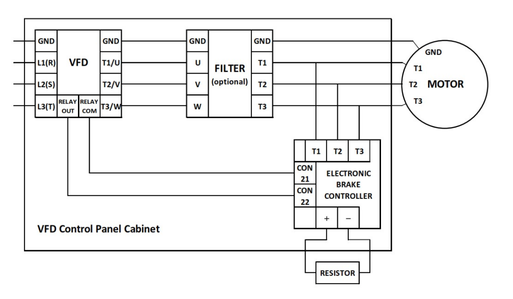- Cables para las bobinas.
- Bornes.
- Puesta a tierra.
- Termistor.
2.3 Prácticas recomendadas del uso de la tecnología
Durante la implementación de la tecnología, es importante tener en cuenta las siguientes recomendaciones:
Pruebas en vacío: los cabezales PMM no pueden ser encendidos, ni probados en vacío, esto debido a que son cabezales de rotación también y los rodamientos no se encuentran “asentados” en su lugar en vacío. Únicamente cuando se coloca peso en la extensión del eje es posible probar los cabezales PMM.
Para esto se necesita un banco de pruebas especial, donde se utilizan dos motores, el superior es el que está siendo probado y será llevado a todo su rango de operación, el inferior está simulando la carga axial.
A continuación fotografía del banco de pruebas de General Magnetic GM:
- Es de vital importancia que el variador sea certificado por el fabricante del cabezal PMM o que como mínimo se haya comprobado compatibilidad y funcionamiento del cabezal PMM, el control electrónico de frenado y con el VFD.
- Garantizar el bloqueo con las barreras mecánicas antes de cualquier intervención, no manipular cables, conexiones o variador de frecuencia sin que el bloqueo mecánico esté completamente asegurado.
- En caso que la Stuffing Box no sea suministrada por el fabricante del cabezal PMM, verificar y garantizar la compatibilidad de conexiones y si es necesario un plato adaptador.
- Garantizar que el Bushing del cabezal PMM sea el adecuado para el tamaño de la barra lisa 1 ½” o 1 ¼”.
- Se recomienda instalar el cabezal PMM con cable de cobre, sin embargo, en caso de que por algún motivo no sea posible, será necesario garantizar que el cable se dimensione correctamente.
- Es supremamente importante verificar el sentido de giro antes de arrancar el sistema.
- Verificar el cronograma de mantenimiento de los cabezales PMM, en el caso del MagnoDrive de General Magnetic GM, se hace un único mantenimiento anual que es el cambio de 4 litros de aceite de rodamientos de carga axial.
- No levantar el peso de la sarta soportado sobre el cabezal PMM.
3. Características de un PMM en superficie
A continuación se explicarán las principales características técnicas de los PMM en superficie, como lo son la cantidad de polos, eficiencias, torques, placas de motor, esquemas y planos de conexión.
3.1 Cantidad de polos en motores PMM Superficie
La velocidad de giro de un motor trifásico viene definida por la frecuencia de red (principalmente 50 o 60 Hz.) y el número de bobinas de cada una de las tres fases, así hablamos de 2, 4, 6, 12 polos, etc.
En el caso de los PMM para bombas PCP de General Magnetic GM, hablamos de un rotor con 16 imanes o 16 polos. Aparte tenemos un estator con 18 bobinas, 6 por fase, divididas en grupos de 3. Así pues, tendremos cada 3 bobinas combinadas para cada una de las fases:
A+, A-, B+, B-, C+, C-.
PMM trifásico con 12 bobinas (estator) y 8 imanes o polos (rotor)
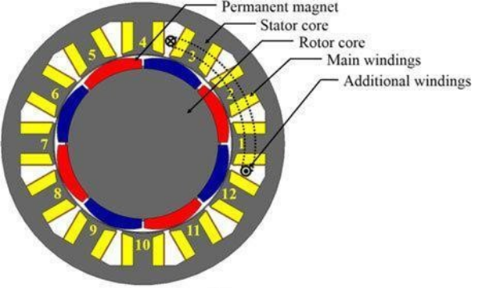La imagen muestra un corte transversal de un PMM. Los colores rojo y azul representan los imanes o polos que se encuentran adjuntados al rotor (círculo gris del centro); al momento de girar el rotor, los imanes giran. La parte gris externa representa el estator, esta parte permanece estática (no gira) mientras el rotor gira.
Las partes amarillas enumeradas representan las bobinas. Entonces, las bobinas en el estator son alimentadas por corriente alterna, lo que genera un campo magnético rotacional, por otro lado, el campo magnético de los imanes localizados en el rotor interactúa con el campo magnético generado por las bobinas del estator, logrando así el movimiento rotacional. La velocidad de giro es directamente proporcional a la frecuencia de la red de corriente alterna que lo alimenta.
Fuente. Adaptado de Chiho Kang (Fotografía), por ResearchGate, 2017.
3.2 Curvas de eficiencia entre un motor convencional y un PMM en superficie - menor consumo de energía
La eficiencia de un motor eléctrico es la relación entre la energía mecánica de salida y la energía eléctrica de entrada.
La eficiencia máxima de un motor eléctrico convencional suele estar cerca del 75 % de la carga nominal. La mayoría están diseñados para funcionar entre el 50 % y el 100 % de la carga nominal. Por otro lado, la eficiencia de un motor tiende a disminuir drásticamente cuando opera con una carga inferior al 50 %. (Del Pino Castrillón, 2015)
Eficiencia de un motor de inducción en función de la potencia en la carga
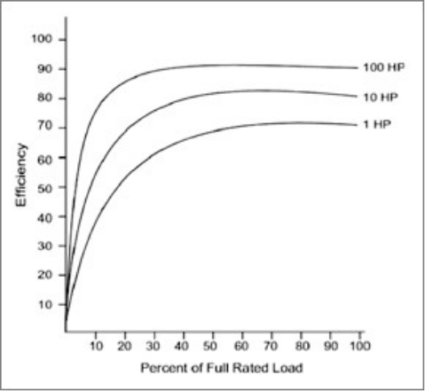Fuente: Adaptado de ¿Cómo incrementar la eficiencia de los motores de inducción? Alfredo de la Quintana, 2009.
En la imagen se muestra la eficiencia de un motor eléctrico que es la relación entre la energía mecánica de salida y la energía eléctrica de entrada.
En el eje x se muestra el porcentaje de carga nominal completa, y en el eje y, la eficiencia. Tenemos tres curvas de tres motores diferentes, basados en su potencia (1 hp, 10 hp, 100 hp).
El gráfico es ilustrativo, resaltando que los motores que funcionan con cargas bajas son más ineficientes debido a que presentan principalmente mayores pérdidas. Otro punto importante es que si los motores operan por debajo del 50 % de la carga nominal de diseño, los motores de inducción empiezan a reducir drásticamente su eficiencia.
Con respecto a un motor de imán permanente de superficie, como el construido por General Magnetic GM, la eficiencia del PMM está estimada en 97,4 % a 450 RPM y 1.000 ft.lb. La utilidad de la eficiencia sobre la sarta se ha estimado en un 92.9 % a 450 rpm y 1,000 ft.lb. Estos valores pueden cambiar según el fabricante y el variador de frecuencia utilizado.
El PMM generará ahorros anuales de energía eléctrica en comparación con los motores convencionales. Las eficiencias del sistema (la potencia perdida entre la alimentación de la línea y la potencia transferida a la sarta de varillas) para un motor convencional varía significativamente por factores como las pérdidas inherentes a los equipos de reducción de velocidad, las políticas operativas de los productores, la antigüedad del equipo y las condiciones ambientales tales como temperaturas extremas, humedad excesiva y polvo.
General Magnetic (GM) participó en una comparación que tuvo un ejemplo de eficiencia general del sistema en el rango medio del 80 % en un sistema altamente optimizado para un pozo específico.
GM también participó en una comparación con una unidad hidráulica eléctrica no optimizada que tenía eficiencias del sistema de alrededor del 75 %.
En estos casos, las reducciones de consumo de energía observadas oscilaron entre cerca del 10 % y más del 20 %. La información anecdótica de los operadores sugiere que las eficiencias del sistema son típicamente en el rango del 70 % - 75 % para productos convencionales que operan en Canadá.
En entornos como América del Sur y Oriente Medio, las eficiencias de los sistemas convencionales probablemente serían menores. Además, las tasas más altas de reemplazo de correas, el tiempo de inactividad y el costo asociados, así como la producción reducida en estos entornos, aumentan los costos operativos en los sistemas convencionales.
Ahorro de energía eléctrica para motores PMM de GM.
| Consumo de energía base inicial (kWh) | Reducción de energía eléctrica PMM | Reducción de potencia | Precio de energía | Ahorro de energía |
|---|---|---|---|---|
| 555,000 | 10% | 55,500 | $0.10 | $5,550 |
| 555,000 | 15% | 83,250 | $0.10 | $8,325 |
| 555,000 | 20% | 111,000 | $0.10 | $11,100 |
El ahorro total de energía anual en aplicaciones específicas dependerá del consumo total de energía y del costo de la energía en cada región en particular.
3.3 Curvas de torque entre un motor convencional y un PMM en superficie
El “par motor” o torque es el momento de fuerza que ejerce un motor sobre el eje de transmisión de potencia, es decir, la tendencia de una fuerza para girar un objeto alrededor de un eje. La potencia desarrollada por el torque es proporcional a la velocidad angular del eje de transmisión, viniendo dada por:
P=M*ω
donde:
P es la potencia (W)
M es el torque (N*m)
ω es la velocidad angular (rad/s), rad/s=rpm*2π/60
Curvas par motor, par resistente en función de la velocidad
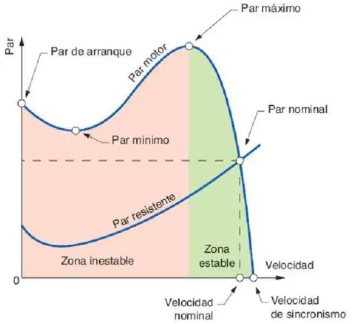En la imagen se muestra un motor de inducción trifásico el cual debe realizar un trabajo constante en unas condiciones determinadas, normalmente se define las necesidades de ese trabajo a realizar y se busca el motor que mejor se adapte a las necesidades. Para ello los fabricantes disponen de una amplia gama de motores.
En la figura superior tenemos, en el eje x la velocidad de rotación del motor, y en el eje y el torque o par. Tenemos diferentes puntos a resaltar:
Fuente: Adaptado de formación para la industria 4.0 par motor, par resistente, por José Ramon Vaello.
Arranque del motor (montado sobre el eje y): es el instante en que se alimenta el motor y se inicia el proceso de la puesta en marcha. En este punto el torque del motor tiene que ser superior al torque resistente que ofrece la carga conectada al motor. Si no se cumple que TR ≤ T0 el accionamiento no girará.
Zona inestable (color rojo): en esta zona el motor no puede conseguir un punto de funcionamiento estable en régimen permanente. Esta zona es atravesada durante el proceso de puesta en marcha.
Zona estable (color verde): es la zona donde el motor puede trabajar en régimen permanente. En esta zona se encuentra el punto de funcionamiento nominal (al igualarse el torque del motor y el torque resistente, el motor se estabilizará alcanzando la velocidad nominal) para el que ha sido diseñada la máquina, y donde puede trabajar de forma ininterrumpida. Alrededor de la velocidad nominal existe una zona estable en la que el motor puede oscilar en función del torque resistente, variando ligeramente la velocidad. Si lo sacamos de esa zona el motor saldrá de sincronismo y se parará.
La velocidad nominal siempre será inferior a la velocidad de sincronismo o velocidad del campo magnético del estátor, debido al deslizamiento.
El torque resistente aumenta a medida que aumenta la velocidad y el torque del motor disminuye al aumentar la velocidad.
Adicionalmente, en los sistemas convencionales, es importante tener en cuenta el sistema de transmisión de potencia, el cual dependiendo de la relación, nos va a dar el torque definitivo que tendrá el sistema.
Por otro lado, los motores síncronos, como un PMM son un tipo de motor de AC en el que la rotación del eje está sincronizada con la frecuencia de la corriente de alimentación; el período de rotación es exactamente igual a un número entero de ciclos de AC. Su velocidad de giro es constante y depende de la frecuencia de la tensión de la red eléctrica a la que esté conectado y por el número de pares de polos del motor, siendo conocida esa velocidad como "velocidad de sincronismo". Este tipo de motor contiene imanes en el rotor del motor que crean un campo magnético que rota en el tiempo a esta velocidad de sincronismo.
La relación entre la velocidad del motor y los parámetros mencionados es:
donde:
f: Frecuencia de la red a la que está conectado el motor (Hz)
P: Número de pares de polos que tiene el motor
p: Número de polos que tiene el motor
n: Velocidad de sincronismo de la máquina (rpm) (Nistal, 2014)
En el caso de uno de los modelos de motores de imán permanente de General Magnetic GM, la curva de torque se muestra a continuación:
Curva torque PMM en función de la velocidad
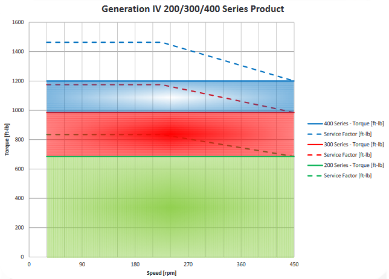Fuente. General Magnetic GM Canadá Ltd., 2017.
En la imagen se muestra el motor de imán permanente que es más eficiente, lo que permite mantener un torque constante sin importar la variación de la velocidad de rotación, siempre y cuando la velocidad se mantenga dentro del rango (30-450 rpm para este ejemplo).
En la imagen se muestran las curvas de torque vs. velocidad de 3 motores PMM, un torque de aproximadamente 700 ft.lb (línea verde) para el motor de la serie 200, un torque de casi 1.000 ft.lb (línea roja) para el motor de la serie 300, y un torque de aproximadamente 1.200 ft.lb (línea azul) para el motor de la serie 400.
Las líneas punteadas representan el torque máximo que cada motor podría alcanzar basado en su factor de servicio, dicho valor empieza a disminuir cuando la velocidad supera las 225 rpm.
Los factores de servicio de cada motor son: para los motores de la tercera generación 1,15 si el motor gira a 30 rpm, 1,15 si el motor gira a 225 rpm y 1,05 si el motor gira a 450 rpm; y para los motores de cuarta generación, un factor de servicio superior a 1,2 si el motor gira a 30 rpm, un factor de servicio superior a 1,2 si el motor gira a 225 rpm y un factor de servicio igual a 1,0 si el motor gira a una velocidad máxima de 450 rpm. Esto significa que los motores se pueden presionar a torques más altos a velocidades más bajas si se selecciona el VFD para operar también a corrientes más altas a velocidades más bajas.
3.4 Mayor flujo magnético en el rotor permite operar a mayores torques y bajas velocidades PMM superficie vs sistema convencional en superficie
Los motores eléctricos convencionales no tienen las eficiencias operativas o el torque en todo su rango de RPM para permitir que los VFD por sí mismos sean la solución completa. Cualquier cambio significativo en la velocidad requiere en última instancia cambios en la relación de transmisión entre el motor y la bomba.
Los cabezales PMM están diseñados específicamente para aplicaciones con bombas PCP. El PMM ha sido diseñado específicamente para aplicaciones de baja velocidad (menos de 500 RPM), lo que elimina la transmisión de potencia y los productos de reducción de velocidad como correas/poleas, engranajes y/o sistemas hidráulicos.
Tiene características operativas únicas que lo hacen ideal para aplicaciones con bombas PCP, que incluyen:
Eficiencias de motor líderes en la industria (97,4%) y la capacidad de integrar equipos de optimización como controladores de bombeo con velocidad continuamente variable.
Torque de arranque excepcionalmente alto (hasta el doble de su torque nominal) y, a diferencia de los motores convencionales, puede entregar un torque nominal de manera eficiente en todas las RPM de funcionamiento.
La eliminación del equipo de reducción de velocidad aumenta la eficiencia del sistema (eficiencia medida entre la línea y la sarta de varillas del 92,9%), lo que reduce el consumo de energía eléctrica.
4. Placas características de los motores de imanes permanentes en superficie
A continuación, se destacan las principales características de los cabezales PMM. Al final de esta parte el estudiante deberá estar en capacidad de identificar los conceptos básicos, las placas, certificaciones y la clasificación de los cabezales PMM.
4.1 Conceptos básicos para los motores de imanes permanentes PMM de superficie
Los cabezales PMM son fáciles de entender. Hay tres requisitos funcionales fundamentales que requieren la evaluación del cliente al elegir el cabezal PMM. Estos se describen en la Tabla 1.
Velocidad de operación: la velocidad de operación es de vital importancia para garantizar que el sistema puede trabajar a la velocidad requerida. Adicionalmente, el factor de servicio del cabezal PMM depende de la velocidad de operación, por tanto es necesario tenerla en cuenta.
Torque de operación y torque máximo: el factor más importante es el torque necesario en el cabezal. Como no se tiene sistema de transmisión de potencia, el torque será relación 1 a 1, por lo que limitará el tamaño del motor.
Carga axial: la capacidad de carga axial es un factor importante a tener en cuenta para determinar el tamaño de rodamientos que se requiere en el sistema. Hay rodamientos de diferentes tamaños.
Para complementar los valores anteriormente descritos, cada fabricante utiliza los comúnmente llamados “datasheet”, los cuales solicitan información de importancia para determinar el sistema correcto.
Para comprender este datasheet, lo invitamos a revisar el siguiente material.
Hoja de llamado al cliente - GMII
Propiedades fundamentales del cabezal PMM del fabricante General Magnetic GM
| Propiedad funcional | Descripción | Número de modelo |
|---|---|---|
| Velocidad | Todos los productos MagnoDrive operan desde 30 rpm hasta 450 rpm. | Todos Series XYZ X: se refiere a la longitud del marco. Y: se refiere a la carga de axial. Z: se refiere a la generación (3 o 4). |
| Torque | La familia de productos MagnoDrive está diseñada para soportar diferentes rangos de torque. Se ofrecen tres series de modelos diferentes. | Serie 2yz. Serie 3yz. Serie 4yz. |
| Carga Axial | La familia de productos MagnoDrive está diseñada para soportar diferentes requisitos de carga axial. Se ofrecen dos capacidades de carga axial nominal diferentes. | Serie x2z – 20,000lbf torque. Serie x4z – 40,000lbf torque. Estos valores son nominales. |
Fuente. General Magnetic GM Canadá Ltd., 2018.
4.2 Identificación de las placas características de los fabricantes de motores de superficie
Cada fabricante tiene su placa característica única, pero presentan información similar y/o complementaria según las especificaciones de cada motor, fabricante y ente certificador. Las principales características son:
- Fabricante.
- Nombre del producto.
- Modelo.
- Parte no.
- Serial.
- Tensión nominal.
- Corriente nominal.
- Potencia nominal.
- Frecuencia nominal.
- Velocidad nominal o Intervalo de velocidades.
- Número de fases.
- Grado de protección IP.
- Eficiencia energética a condiciones nominales de operación.
- Certificaciones del sistema.
Como adicional, algunos fabricantes incluyen:
- Dirección del fabricante.
- Clasificación en áreas peligrosas.
- Sistema de aislamiento (clase de aislamiento).
- Necesidad de variadores certificados.
- Aceite requerido para los rodamientos de carga axial.
- Clasificación a diferentes temperaturas de ambiente.
4.3 Certificaciones y su importancia en los Motores de Imanes Permanentes PMM de superficie (UL/CSA/ATEX/IECEX)
Las certificaciones UL/CSA/IEC Ex y ATEX son de carácter voluntario, pero por su prestigio se han considerado y en la actualidad se exigen en gran cantidad de productos eléctricos y electrónicos, pues le generan mucha confianza y respaldo a los consumidores.
Algunos clientes y países son más exigentes y requieren la certificación International IEC Ex y ATEX, mientras que algunos requieren únicamente la certificación UL/CSA o certificaciones específicas para cada país, como es el caso de Colombia, que exige Retie, el cual puede ser homologado con las certificaciones internacionales UL/CSA en caso de que el motor cuente con ellas.
Las certificaciones verifican que los productos cumplen satisfactoriamente con los requisitos establecidos en las normas vigentes y para esto realizan auditorías de certificación y seguimiento regularmente, garantizando el cumplimiento de las normas.
Las principales certificaciones para cabezales PMM son:
|
La marca UL, es la certificación emitida por Underwriters laboratories (UL), significa que se han realizado pruebas en el producto y que las mismas resultaron positivas, identificando que el producto cumple con las normativas vigentes y demás requisitos aplicables con respecto al potencial riesgo de descarga eléctrica, incendio y peligros mecánicos. |
|
|
CSA International (Canadian Standards Association), es el principal proveedor de servicios de certificación y prueba de productos para la industria eléctrica y mecánica entre otras. Las marcas de certificación internacional de CSA indican que un proceso, producto o servicio se ha probado según algún estándar canadiense o estadounidense y que cumple con los requerimientos CSA como base para la certificación. |
|
|
La Certificación ATEX surge en la Unión Europea y certifica qué tipo de equipos ambientes son permitidos para el trabajo en una atmósfera explosiva. Las regulaciones aplican a todos los equipos que serán utilizados en ambientes explosivos, bien sean mecánicos o eléctricos, incluyendo los sistemas de protección. |
|
|
La norma International Electrotechnical Commission System for Certification to Standards Relating to Equipment for Use in Explosive Atmospheres (IECEx) define un procedimiento utilizado internacionalmente para certificar equipos eléctricos que son utilizados en zonas peligrosas. Dependiendo del tipo de producto y ambiente, se define un sistema que clasifica las zonas de peligro que pueden crear atmósferas explosivas debido a la presencia de gases, fibra o polvo. |
Las certificaciones nos permiten asegurar la calidad del producto y entre más altos son los estándares, se tiene un mayor aseguramiento y confiabilidad en el equipo.
En la siguiente tabla, encontrarán un cuadro de ejemplo con el Fabricante General Magnetic GM, sus modelos de cabezal de superficie y respectivas certificaciones:
| Propiedad funcional | Descripción | Número de modelo |
|---|---|---|
| Estados Unidos / Canadá | Sistema de gestión de calidad internacional definido por ISO9001. Normas técnicas de certificación definidas por: • CAN/CSA C22.2 60079-0 • CAN/CSA C22.2 60079-7 • CSA C22.2 No. 100 • ANSI/UL 60079-0 • ANSI/UL 60079-7 • ANSI/UL 1004-1 |
224 324 344 424 444 |
| IECEx / ATEX | Sistema de gestión de calidad internacional definido por IEC80079-34 que se basa en ISO9001. Normas técnicas de certificación definidas por: • IEC/EN 60079-0 • IEC/EN 60079-7 |
224Ex 324Ex 344Ex 424Ex 444Ex |
4.4 Clasificación de los Motores de Imanes Permanentes PMM de superficie (Clase 1, Div 2 / Clase 1, Div 1)
En una instalación industrial, como un campo petrolero, una refinería, entre otras, la manipulación de grandes cantidades de líquidos y gases inflamables crea un riesgo de exposición. En algunos casos, la atmósfera peligrosa está presente todo el tiempo o durante períodos prolongados.
En otros casos, la atmósfera normalmente no es alarmante, pero se puede prever razonablemente una concentración peligrosa, como un error del operador o una falla del equipo.
Por tanto, las ubicaciones se clasifican por tipo y riesgo de emisión de gas, vapor o polvo. Varias normativas utilizan términos como clase, división, zona y grupo para diferenciar los distintos peligros.
Para Canadá, cualquier instalación nueva debe clasificarse usando el sistema de zona, mientras que las instalaciones existentes pueden usar división o reclasificarse a zona. Las instalaciones de EE. UU. Pueden usar división o zona.
North America/ATEX/IECEx Atmosphere Groups
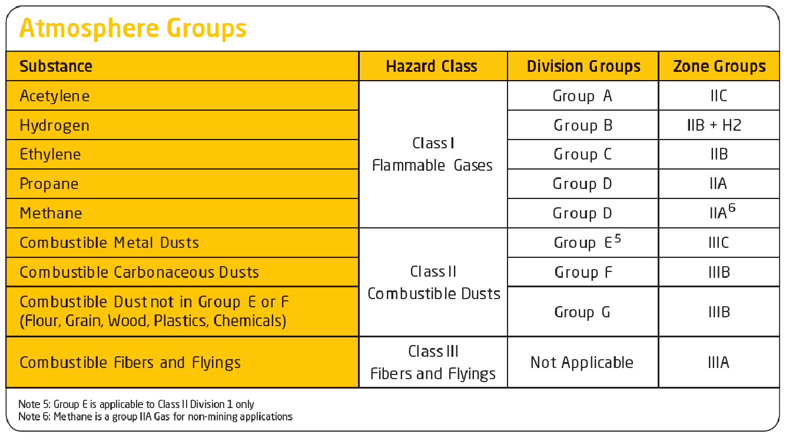Fuente. Anexo 9 (Intertek, 2020).
North America/ATEX/IECEx Classification of Divisions and Zones
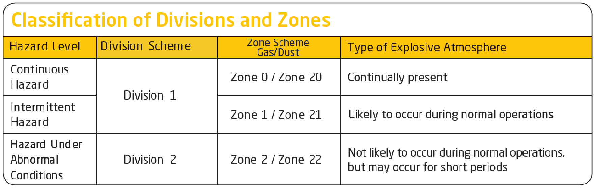Fuente. Anexo 10 (Intertek, 2020).
En el caso de los motores PMM de GM, los motores de tercera generación (GEN III) están certificados como Class I, Zone 2, y los motores de la última generación o GEN IV están certificados como Class I, Zone I. Esta clasificación se refiere a las posibles sustancias presentes y el nivel de peligro o riesgo.
5. Esquemas y planos de conexionado de Motores de Imanes Permanentes PMM
A continuación se presentan los esquemas de conexión y los procedimientos de instalación, conexión, desinstalación y desconexión de cabezales PMM.
5.1 Esquema de conexión de equipos para instalación de motores de superficie
A continuación se muestran los esquemas generales de conexión de equipos para una instalación tipo de cabezales PMM.
Esquema general de interconexión eléctrica PMM
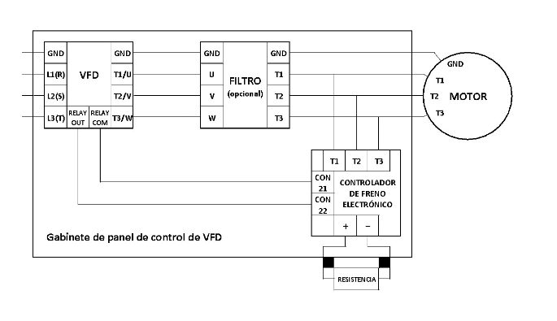Fuente. (General Magnetic GM Canadá Ltda., 2018).
La imagen superior muestra de manera resumida como es la conexión eléctrica entre el motor, el VFD, el filtro sinusoidal (este es opcional), y el freno electrónico. Algunos puntos a resaltar:
- (T1, T2, T3), (U, V, W) y (L1, L2, L3) representan los cables de cada una de las fases. La nomenclatura dependerá de la industria y el fabricante. Por ejemplo, si hablan de T1, T2, T3 se espera que estén hablando del motor. Si hablan de U, V, W o L1, L2, L3 se espera que estén hablando del VFD.
- Los relés (RELAY) y los conectores (CON) son simplemente las conexiones entre el freno electrónico y el VFD.
- GND, representa la conexión a tierra.
- Si ven con detalle la imagen, el VFD, el filtro y el freno estarían localizados en el gabinete de panel de control del VFD.
Detalles de cable de alto nivel motor PMM GM
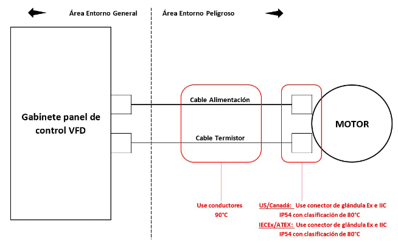Fuente. (General Magnetic GM Canadá Ltd., 2018).
En la imagen superior se muestra un resumen de las conexiones eléctricas entre el motor y el VFD, donde se resalta las características que deben tener los cables y los conectores de los cables:
- Los cables usados tanto para la conexión eléctrica, como para el termistor deben de tener una clasificación mínima de 90 ° C. Por ejemplo, en Canadá, el cable de teck está definido por la norma CSA C22.2 No. 131 y lleva la designación de tipo TECK90, el 90 se refiere a la temperatura ambiente normal en grados Celsius en la que el cable puede usarse sin disminuir su capacidad (ampacidad).
- Conectar el conector PTC (Positive Temperature Coefficient) del motor a los terminales PTC dentro del panel de control del VFD (si está equipado). Consulte los esquemas específicos del panel de control del VFD para conocer los detalles de la conexión PTC. Los termistores que tienen un coeficiente de temperatura positivo o PTC, incrementan su resistencia a medida que aumenta la temperatura del motor.
- Hay que asegurar que los conectores de glándula para entornos peligrosos usados tanto para los cables de energía como para los cables de los termistores están clasificados para:
- EE. UU. / Canadá: conectores de glándula Ex e IIC IP54 con clasificación de 80 ° C o mejor.
- IECEx / ATEX: conectores de glándula Ex e IIC IP54 con clasificación de 80 ° C o mejor.
- Vale resaltar que el área fuera del gabinete de panel de control del VFD se considera un área de entorno peligroso, o zona de alto riesgo.
5.2 Conexión, instalación, desconexión y desinstalación de motores PMM de superficie
La instalación de los cabezales PMM se divide en la instalación mecánica y posteriormente la instalación eléctrica.
Es supremamente importante tener especial cuidado con los mensajes de seguridad.
Los principales aspectos durante cualquier intervención a un cabezal PMM son:
- Reunión de seguridad.
- Acatar las medidas generales de HSE frente a una intervención y adicionalmente las recomendadas por el fabricante del cabezal PMM.
- Tenga a la mano el manual de seguridad y el manual del usuario del equipo.
- Verifique y entienda el mensaje de seguridad.
- Utilice los EPP adecuados.
Antes de cualquier intervención.
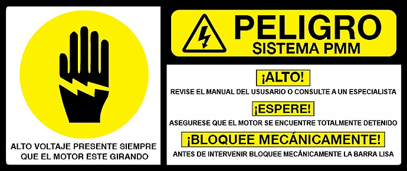Para el paso a paso de la instalación y desinstalación mecánica y eléctrica.
Glosario
BACKSPIN:efecto que se genera en un sistema de levantamiento artificial con bombeo por cavidades progresivas. El mismo se genera cuando el pozo se detiene y el petróleo se devuelve por gravedad a través de las cavidades de la bomba, generando un giro inverso (en sentido contrario) hasta que los fluidos lleguen a nivel.
Bomba de cavidades progresivas en fondo:es la bomba de cavidades progresivas compuesta por un rotor y un estator que se encarga de bombear el petróleo a superficie en el sistema de levantamiento artificial con bombeo por cavidades progresivas.
BOP (Blow Out Preventors):son válvulas de seguridad de alta presión utilizadas para sellar, controlar y monitorear el fluido de un pozo para prevenir una salida de crudo incontrolada (blowout) debido a fallas en el sistema de control de presiones.
Caja de bornes:es la caja del cabezal PMM donde se encuentran los bornes para realizar la conexión eléctrica del motor PMM.
Carga axial:es la carga (el peso) que debe soportar el cabezal de rotación, la misma capacidad se mide en libras y contempla el peso de la sarta de varillas, el rotor, la columna de fluido, viscosidad.
Carga nominal:se trata de la capacidad máxima del motor, es la que se encuentra en la placa del equipo.
EMF (Electromotive force):energía por unidad de carga que es impartida por una fuente de energía, tal como un generador eléctrico o una batería.
PCP:Progressive Cavity Pump (Bomba de Cavidades Progresivas).
PMM:Permanent Magnet Motor (Motor de Imanes Permanentes).
PTC:Coeficiente Positivo de Temperatura (Positive Coefficient of Temperature.
RAM:dispositivo de bloqueo mecánico de la barra lisa.
Sistemas PCP:Sistema de Levantamiento Artificial de Petróleo de Bombeo por Cavidades Progresivas, compuesto por una bomba de cavidades progresivas en fondo, el cual está conectado a superficie con una sarta de varilla hasta un cabezal con motor que genera la rotación que activa la bomba que está en fondo.
Top Drive:cabezal.
Torque:medida de la fuerza que se necesita aplicarle a una varilla para hacer girar un objeto.
VFD:Variable Frecuency Drive (Variador de Frecuencia.
VSD:Variable Speed Drive (Variador de Velocidad.
Material complementario
| Nombre del documento o material | Tipo de material | Enlace del recurso |
|---|---|---|
| Marcelo Hirschfield, 2008, PCPump Handbook Versión 2008V1 – Manual de Bombeo de Cavidades Progresivas. | Manual | ver |
| Erika Ávila, Ing. Carlos José Vilchez (Instructor), Bombas de Cavidad Progresivas – BCP, Sena. | Presentación – curso Sena | ver |
| General Magnetic GM, General Magnetic Brochure Nov 2017 v5. | PDF - Brochure | ver |
| PMM trifásico con 12 polos (estator) y 9 imanes (rotor). | Imagen | ver |
| Eficiencia de un motor de inducción en función de la potencia en la carga. | Artículo | ver |
| Aaron Brassard, Manual del Usuario – Top Drive Directo con Motor de Imanes Permanentes Integradom Noviembre de 2018. | Manual del usuario | ver |
| Formación para la Industria 4.0 Par Motor, Par Resistente. | Artículo | ver |
| Rodatech S.A.S., 2018, Hoja de Llamado al Cliente (Datasheet). | Formato | ver |
| TÛV SÛD, Importancia de las Certificaciones ATEX e IECEx. | ver |
Referencias bibliográficas
Ávila, E., & Vilchez García, C. J. (2019). Presentación bombas de cavidades progresivas BCP.https://www.rodatech.co/
Del Pino Castrillón, J. J. (2015). Estudio integral de factibilidad de la migración de motores convencionales a motores de imanes permanentes para equipos electrosumergibles de levantamiento artificial (Doctoral dissertation, Universidad Industrial de Santander, Escuela De Ingeniería de Petróleos).
General Magnetic GM. (2018). MANUAL DE USUARIO – TOP DRIVE DIRECTO CON MOTOR DE IMANES PERMANENTES INTEGRADO. Rodatech S.A.S.
Herrera Guachamin, J G. (2018). Análisis de la eficiencia de los motores de inducción que operan bajo diferentes condiciones de fallos [Tesis de maestría]. Universidad Politécnica de Valencia.
Hirschfeldt., M. (2008). Manual de bombeo de cavidades progresivas (Versión 1 ed.).http://oilproduction.net/
Intertek. (2019). Hazardous Locations & Explosive Atmospheres.https://www.intertek.com/
Mantilla, L. F., & Quispe, E. C. (2004). Motores eléctricos de alta eficiencia: características electromecánicas, ventajas y aplicabilidad. Researchgate.https://www.researchgate.net/
Rodatech. (2019, agosto). Procedimientos de seguridad e instrucciones operativas para los Top Drive MagnoDrive de General Magnetic GM. Rodatech S.A.S.
Rodatech, S.F.(2020). Presentación PMM Top Drive.https://www.rodatech.co/
Fotografías y vectores tomados de https://www.shutterstock.com/ y https://www.freepik.es/
Licencia Creative Commons
CC BY-NC-SA
Ver licencia.